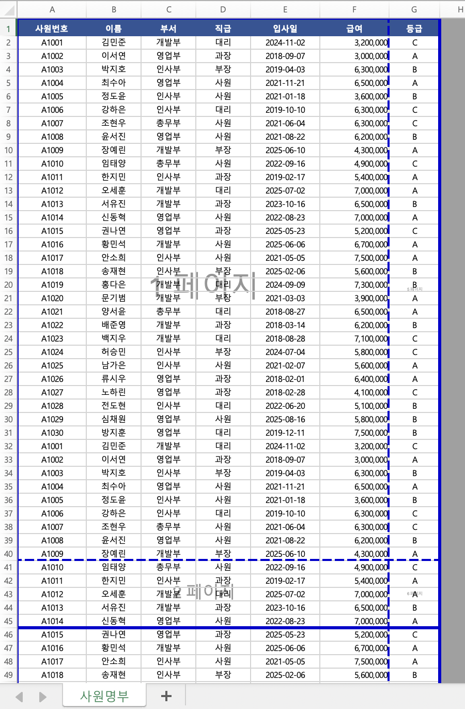
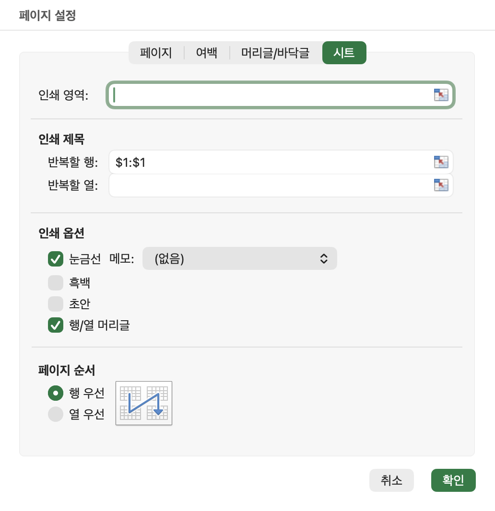
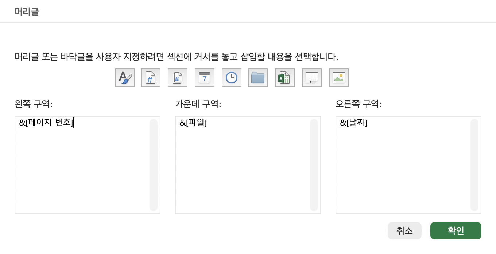
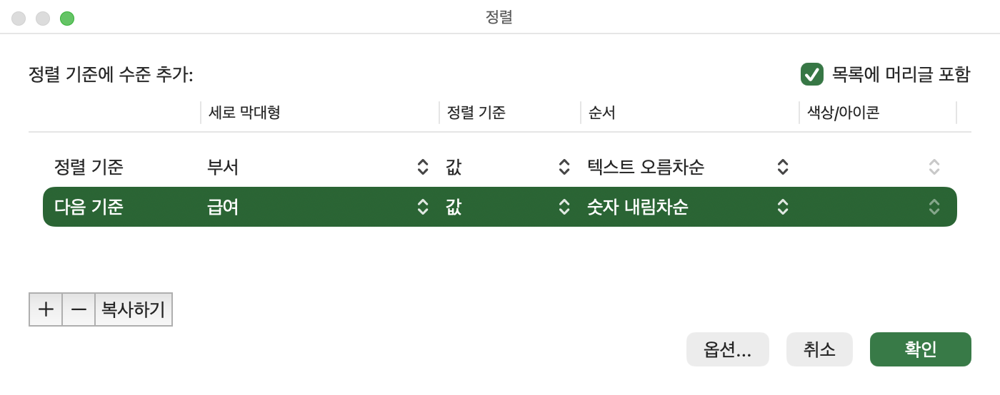
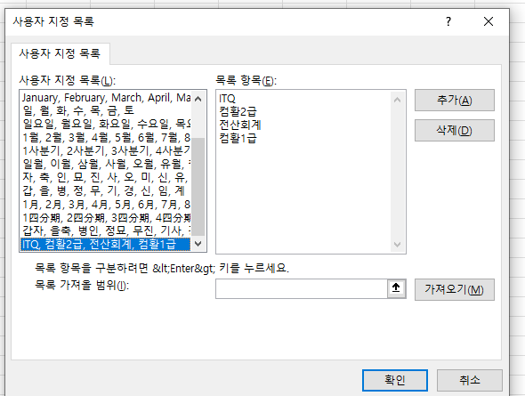
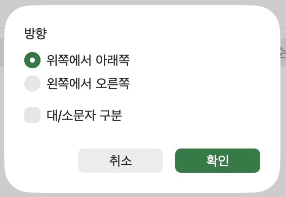
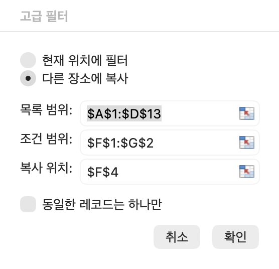

4차시 복습카드인쇄 설정
차례대로 넘기며 복습하세요.
인쇄 설정
정렬과 고급 필터
1표시 형식 보충 — 쉼표로 단위 생략, 요일 코드, @
2인쇄 — 인쇄 영역, 한 장 꽉 차게, 여러 장 나누기·제목 반복·머리글/바닥글
3정렬 — 오름·내림차순, 정렬 순서표, 여러 기준, 사용자 지정 목록
4고급 필터 — AND·OR 조건표, 다른 장소에 복사, 특정 필드만
표시 형식 더하기쉼표 하나에 세 자리, 두 개면 여섯 자리가 생략됩니다.
쉼표 하나 = 세 자리 생략
1생략은 반올림 — 46.51… 백만 → 46이 아니라 47. 잘라 버리는 것이 아니라 생략할 자리를 보고 반올림합니다
2단위 글자 — 실무에서는 #,##0,"천원" · #,##0,,"백만원" 처럼 단위를 붙이거나 표 위에 «단위: 천원»을 적습니다
3셀 안의 값 — 화면만 줄어 보일 뿐, 셀에 들어 있는 값은 46,512,300 그대로입니다
표시 형식 더하기요일은 영문 d, 한글 a — 둘 다 3개·4개입니다.
요일 코드와 문자 서식
1@ — 셀에 들어 있는 문자 자리 · @"지점" → 서울 → «서울지점»
2#, 0 — 숫자 자리 (1차시·3차시 복습)
3속지 않기 — «서울지점»으로 보여도 셀 값은 «서울». 함수 조건을 쓸 때는 셀을 눌러 수식 입력줄에서 실제 값을 확인합니다
화면 보기파일을 복사해 두 번 열지 않아도 됩니다.
같은 문서 두 곳을 동시에 보기
1파일 두 개 — 각각 연 다음 보기 › 모두 정렬
2같은 파일 — 보기 › 새 창 → 모두 정렬. 제목 표시줄에 «파일명:1», «파일명:2»로 나뉩니다
3틀 고정·나누기 — 틀 고정은 선택한 셀의 왼쪽·위쪽이 고정, 창 나누기는 2개 또는 4개 창. 둘은 함께 쓸 수 없습니다
인쇄행 높이·열 너비를 바꾸면 페이지 구분이 달라지므로 인쇄 설정은 편집을 마친 뒤 마지막에 하는 것이 좋습니다.
인쇄는 두 곳만 기억하세요
1페이지 탭 — 큰 틀 — 용지 방향, 배율, 자동 맞춤, 용지 크기, 시작 페이지 번호
2여백 탭 — 상하좌우·머리글/바닥글 여백, 페이지 가운데 맞춤(가로·세로)
3머리글/바닥글 탭 — 페이지 번호·날짜·파일 이름 등을 코드로 넣기
4시트 탭 — 세부 사항 — 인쇄 영역, 반복할 행·열, 눈금선, 흑백, 간단하게 인쇄, 행/열 머리글
인쇄 ①
페이지 레이아웃 › 인쇄 영역 (맥 엑셀 화면) · 눌러서 크게 보기
원하는 부분만 — 인쇄 영역
1간단하게 — 인쇄할 범위 선택 → 페이지 레이아웃 탭 › 인쇄 영역 › 인쇄 영역 설정
2대화 상자로 — 페이지 설정 › 시트 탭 › 인쇄 영역 칸에 범위 드래그
3장점 — 시트 내용을 지우지 않고 필요한 부분만 인쇄합니다. 다시 전체를 인쇄하려면 «인쇄 영역 해제»
인쇄 ②글자 크기를 하나씩 키우거나 열을 끼워 넣어 가운데 맞추지 않습니다. 
페이지 설정 › 여백 탭 (맥 엑셀 화면) · 눌러서 크게 보기
짧고 가로로 긴 표 → 한 장에 꽉 차게
1방향 — 내용이 가로로 길면 용지 방향을 가로
2가운데 — 여백 탭 «페이지 가운데 맞춤»에서 가로·세로 모두 체크 — 한 장짜리일 때
3배율 — 확대/축소 배율을 올려 여백을 채우고, 미리 보기로 2쪽으로 넘어가지 않는지 확인
인쇄 ③페이지 나누기 미리 보기 (맥 엑셀 화면) · 눌러서 크게 보기
여러 장 문서는 페이지 나누기 미리 보기부터

1바깥 파란 실선 — 인쇄되는 영역의 테두리
2파란 점선 — 엑셀이 자동으로 나눈 페이지 경계 → 끌어서 옮기면 실선(수동 페이지 나누기)으로 바뀝니다
3균등하게 — 오른쪽 끝까지 끌어 한 페이지에 모든 열이 들어가게 하고, 레코드가 페이지마다 고르게 나뉘도록 점선을 옮깁니다
4세로 가운데 — 여러 장 문서는 보통 세로 가운데 맞춤을 하지 않습니다. 마지막 장의 몇 줄이 페이지 한가운데 떠 버리기 때문
인쇄 ④페이지 설정 › 시트 탭 · 반복할 행 (맥 엑셀 화면) · 눌러서 크게 보기
2쪽부터 사라진 필드명 — 인쇄 제목

1틀린 방법 — 각 페이지 위에 필드명 행을 복사해 끼워 넣기
2맞는 방법 — 페이지 레이아웃 탭 › 인쇄 제목 → 시트 탭 «반복할 행»에 필드명 행(예: $4:$4)
3주의 — Ctrl+P 미리 보기에서 연 페이지 설정에서는 인쇄 영역·반복할 행/열이 비활성 — 미리 보기에서는 셀을 선택할 수 없기 때문. Esc로 나와서 설정
인쇄 ⑤머리글 편집 · 구역별 코드 (맥 엑셀 화면) · 눌러서 크게 보기 파일 이름과 시트 이름을 헷갈리지 않게 — 시트 이름은 &[탭]입니다.
머리글·바닥글은 코드로 넣는다

1구역 — 왼쪽·가운데·오른쪽 구역 중 하나에 커서를 두고 아이콘 클릭
2예 — 머리글 오른쪽 = 날짜, 바닥글 가운데 = 페이지 번호
3«1 / 5» 형식 — &[페이지 번호] 와 &[전체 페이지 수] 사이에 / 를 넣습니다. 붙여 넣으면 «15»처럼 이어져 보입니다
인쇄 ⑥
탭마다 숨어 있는 옵션
1시작 페이지 번호 — 머리글/바닥글 탭이 아니라 페이지 탭에 있습니다 (예: 100부터 시작)
2배율 — 확대/축소 배율은 10~400% (화면 확대·축소 범위와 같음)
3자동 맞춤 — 용지 너비 1 · 용지 높이 1 → 여러 장을 강제로 한 장에. 빨리 한눈에 볼 때 자주 씁니다
4홀수/짝수·첫 페이지 — 머리글/바닥글 탭 — 홀수·짝수 페이지를 다르게, 첫 페이지(표지)를 다르게
5문서에 맞게 배율 조정 — 머리글/바닥글 탭의 이 옵션은 머리글·바닥글 크기를 문서 배율에 맞추는 것 — 문서 전체 배율이 아닙니다
6프린터 선택 — 페이지 설정 대화 상자가 아니라 Ctrl+P 인쇄 화면 왼쪽에 있습니다
인쇄 ⑦급하게 표만 뽑아 볼 때는 «눈금선»만 체크해도 됩니다.
시트 탭의 인쇄 옵션
1간단하게 인쇄 — 교재에서는 차트·도형 등 그래픽이 빠진다고 정리합니다(프린터가 지원할 때). 도형 하나만 빼고 싶을 때 쓰는 기능이 아닙니다
2도형 하나만 빼기 — 도형 우클릭 › 크기 및 속성 › 속성 › 개체 인쇄 체크 해제
인쇄 ⑧
페이지 나누기 — 시험에 자주 묻는 특징
1행 높이·열 너비 — 바꾸면 자동 페이지 구분선(점선) 위치가 바뀝니다 → 그래서 인쇄 설정은 마지막에
2점선 vs 실선 — 점선 = 자동 페이지 나누기, 안쪽 실선 = 사용자가 지정·이동한 수동 페이지 나누기, 바깥 실선 = 인쇄 영역 경계
3강제로 나누기 — 페이지 나누기 미리 보기에서 행을 선택하고 우클릭 › 페이지 나누기 삽입(또는 페이지 레이아웃 › 나누기) → 선택한 행의 위쪽에 구분선이 생깁니다
4끌어서 조정 — 페이지 나누기 미리 보기에서 구분선을 끌어 나눌 위치를 바꿀 수 있습니다
인쇄 ⑨행 높이는 미리 보기에서 조절할 수 없습니다.
인쇄 미리 보기(Ctrl+P)에서 되는 것·안 되는 것
1종료 — Esc 또는 왼쪽 위 뒤로 가기
2여백 표시 — 누르면 여백선이 화면에 나타날 뿐, 페이지 설정 대화 상자가 열리지는 않습니다
정렬숫자가 작을수록 1등인 데이터(달리기 기록·1등급)는 오름차순.
오름차순·내림차순은 언제 쓰나
1방법 — 정렬할 필드 안 아무 셀에 셀 포인터 → 데이터 탭 › 정렬 및 필터 › 오름차순/내림차순
2홈 탭에도 — 홈 › 편집 › 정렬 및 필터
3필드·필드명 — 열 하나 = 필드, 맨 위 제목 = 필드명, 한 행 = 레코드
정렬내림차순은 반대 순서 — 단, 빈 셀은 내림차순에서도 맨 마지막입니다.
오름차순 정렬 순서표 — 외우기
1문자 — 특수 문자 → 영문 → 한글. 대/소문자 구분을 켜면 소문자가 대문자보다 먼저 (교재 표 기준)
2논리값 — FALSE = 0, TRUE = 1 로 보면 쉽습니다 → FALSE 가 먼저
3오류 값 — #N/A, #VALUE! 등은 서로 우선순위가 없어 원래 순서대로
4빈 셀 — 오름차순·내림차순 모두 맨 마지막
정렬데이터 › 정렬 · 기준 추가 (맥 엑셀 화면) · 눌러서 크게 보기
기준이 두 개 이상 — 정렬 대화 상자

1대분류 → 소분류 — 첫 기준 «분야» 오름차순, 기준 추가 «도서명» 오름차순 → 분야 안에서 도서명 정렬
2따로 두 번 누르면 — 도서명을 나중에 정렬하면 분야 순서가 흐트러집니다 — 기준을 한 대화 상자에
3최대 64개 — 정렬 기준은 64개까지 추가할 수 있습니다
4A·B·C로 보이면 — 머리글 포함이 꺼져 있거나 표 제목이 데이터에 붙어 있는 경우 → 필드명부터 레코드까지 범위를 직접 선택
정렬사용자 지정 목록 (맥 엑셀 화면) · 눌러서 크게 보기
내가 정한 순서 — 사용자 지정 목록

1언제 — 회사 보고 순서처럼 오름·내림차순으로 안 되는 순서 (예: 문학 → 자기계발 → 학습서 …)
2방법 — 정렬 › 정렬할 필드 «분야» › 정렬(순서) › 사용자 지정 목록 → 항목을 Enter로 줄마다 입력 → 추가 → 확인
3추가 필수 — 입력만 하고 «추가»를 누르지 않으면 목록이 만들어지지 않습니다
42차시와 연결 — 채우기 핸들로 월·화·수… 를 채우던 그 «사용자 지정 목록»을 정렬에도 씁니다
정렬정렬 옵션 · 방향과 대/소문자 (맥 엑셀 화면) · 눌러서 크게 보기
정렬 옵션과 주의할 점

1정렬 기준 — 셀 값뿐 아니라 셀 색 · 글꼴 색 · 조건부 서식 아이콘으로도 정렬
2방향 — 기본은 위쪽에서 아래쪽(레코드 순서). 왼쪽에서 오른쪽을 고르면 필드(열) 순서가 바뀝니다
3대/소문자 — 기본은 구분하지 않음 → 옵션에서 체크해야 구분
4숨긴 행 — 숨겨진 행은 정렬되지 않고 제자리에 있습니다
5병합된 셀 — 중간에 병합한 «합계» 줄 등이 있으면 «병합된 셀의 크기가 동일해야» 오류로 정렬이 안 됩니다
고급 필터같은 행에 적으면 «그리고» 다른 행에 적으면 «또는» — 0의 개수를 천천히 세세요.
조건표 쓰는 법 — 같은 줄 AND, 다른 줄 OR
1필드명 — 일반 비교 조건이면 조건표 첫 줄의 필드명을 원본과 똑같이 — 복사(Ctrl+C) 해서 붙여 넣기 권장. 수식(함수) 조건은 함수 배운 뒤에 다룹니다
2비교 연산자 — >= <= > < = 그리고 <>(아니다). 예: 지역 «<>울산» = 울산이 아닌 것
3문자 조건 — «울산»처럼 문자만 적으면 «울산»으로 시작하는 값까지 찾습니다. 이 수업 데이터처럼 지역 이름이 겹치지 않으면 결과는 같습니다
고급 필터초록 줄 = 서울이면서 퀵 / 노랑 줄 = 부산이면서 수량 30 이상
AND와 OR가 섞인 조건표 읽기
1읽는 순서 — 한 줄을 AND로 끝까지 읽고 → «이거나» → 다음 줄을 AND로 읽기
2위 표 — «지역이 서울이고 배송이 퀵» 이거나 «지역이 부산이고 수량이 30 이상»
3필기 — 조건표를 주고 «이 조건으로 추출되는 것은?»을 고르는 문제가 나옵니다 (교재 387~388쪽)
고급 필터데이터 › 고급 (맥 엑셀 화면) · 눌러서 크게 보기
실행 순서 — 다른 장소에 복사

11 — 조건표를 원본 표와 붙지 않게 한 칸 이상 띄운 빈 곳에 먼저 작성
22 — 셀 포인터를 데이터 안에 두고 데이터 탭 › 정렬 및 필터 › 고급
3목록 범위 — 필드명부터 마지막 레코드까지 표 전체
4조건 범위 — 방금 만든 조건표 (필드명 포함)
5다른 장소에 복사 — 선택 후 «복사 위치»에 결과를 시작할 셀 하나
고급 필터준비물이 두 개 — 조건표와 결과 필드명.
특정 필드만 뽑기 — 결과 필드명을 먼저 준비
1결과 필드명 — 결과를 놓을 곳에 원하는 필드명만 원본에서 복사해 둡니다
2복사 위치 — 셀 하나가 아니라 그 필드명 범위(예: 서점·도서명·수량 세 칸)를 지정
3동일한 레코드는 하나만 — 체크하면 결과로 뽑은 필드 기준으로 똑같은 행은 한 번만 — 예: 결과 필드를 «서점» 하나만 두면 주문한 서점 목록
4서식 — 고급 필터 결과는 값만 복사되고 원본의 서식은 따라오지 않을 수 있습니다
미니 퀴즈
이름 입력 후 문제를 풀고 채점합니다.
4차시 복습 퀴즈
10문제가 한 화면에 나옵니다. 위에서부터 고르고 맨 아래에서 채점하세요.
이름을 입력하면 시작합니다.
채점 결과는 선생님께 전달되어 복습 확인에 쓰입니다.
복습 체크리스트확인이 필요한 항목은 해당 카드로 돌아가세요.
4차시 복습 체크리스트
한 장짜리와 여러 장 문서를 각각 알맞게 인쇄 설정할 수 있나요?
오름차순 정렬 순서와 사용자 지정 목록 정렬을 설명할 수 있나요?
AND·OR 조건표를 만들고 특정 필드만 고급 필터로 뽑을 수 있나요?
우리컴퓨터학원 / ☎ 052)258-3388 · 컴퓨터활용능력2급 · 김태희 강사
영상·음성 복습학습 주제를 선택하면 해당 부분부터 재생됩니다.
4차시 영상·음성 복습
화면과 강사 음성을 함께 보거나 원하는 주제를 선택해 들을 수 있습니다.
화면과 강사 음성을 함께 보는 복습 영상기본 1.2×
0:000:00
강사 음성 합성으로 제작한 복습 음성입니다.